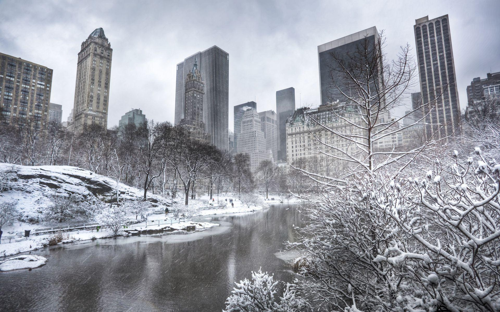

TokyoUKdubaisouth-africa
Nigeria is a country located in west africa.The national flag of nigeria is green white green.Nigeria hasthree major ethnic groups which are IGBO , YORUBA ,AND HAUSA.Nigeria has 36 states and capitals.The president of Nigeria is president muhamed Buhari.The federalc capital territor is Abuja.Nigeria , officially the Federal Republic of Nigeria, is a country in West Africa. It is geographically situated between the Sahel to the north and the Gulf of Guinea to the south in the Atlantic Ocean. It covers an area of 923,769 square kilometres (356,669 sq mi), and with a population of over 218 million.
